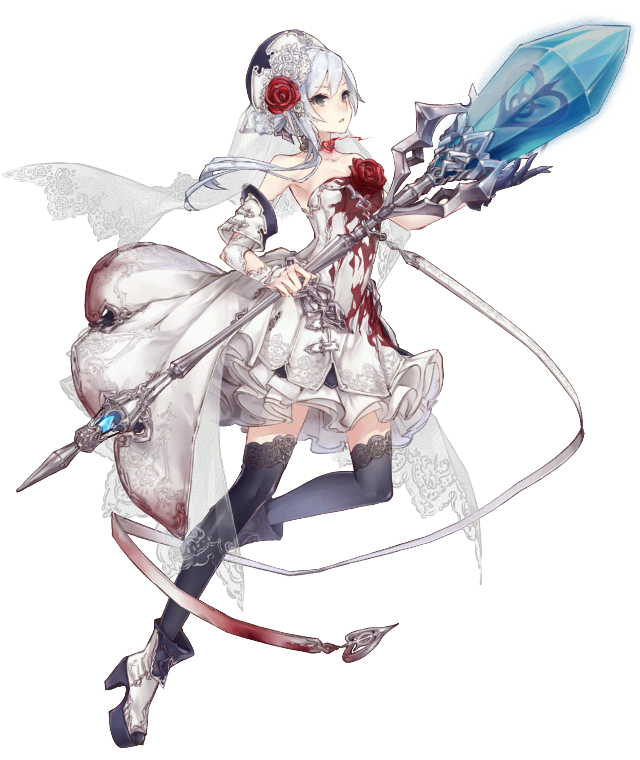

This page is under construction. Expect the page to finish before 15 November 2023.
SINoALICE began its worldwide journey on 1 July 2020.
From all the Colosseum sessions -- past and present; to the number of updates, hotfixes, and collaborations; SINoALICE defined as a new RPG standard in which players can experience the wrath unlike any other.
It's unlike any other RPG that makes it so unique.

TheLonelyBride
Emi (Emmannuel Ortega) originated TheLonelyBride as a primary homage to one of the characters in the game -- Snow White.
She previously enshrined herself in a Cleric class, the initial look of a bridal outfit.
It was solidified following the debut of Snow's Mage class -- the literal bridal outfit, shown below.

What will happen to TheLonelyBride after the Global Edition shuts down?
Most experiences will carry over to the Japanese Edition, where Emi will continue raising the flag and continue representing as Snow White.